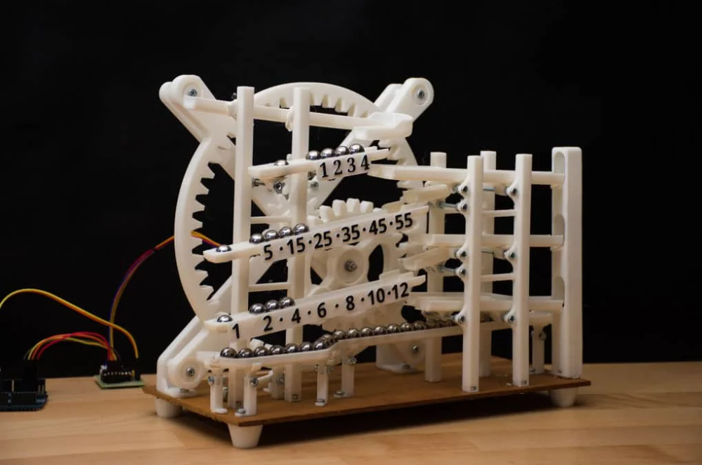
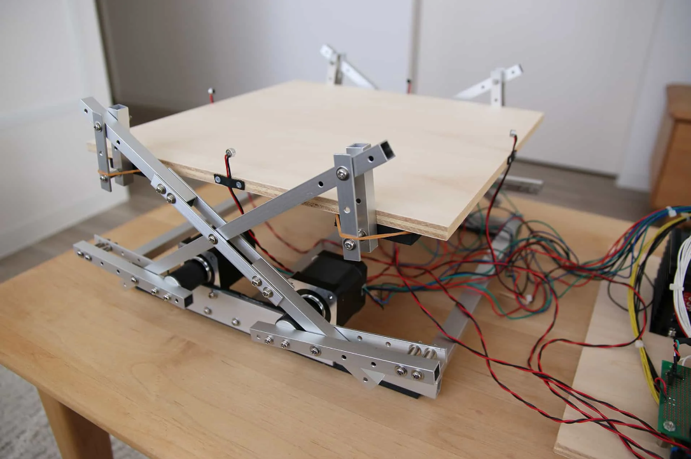
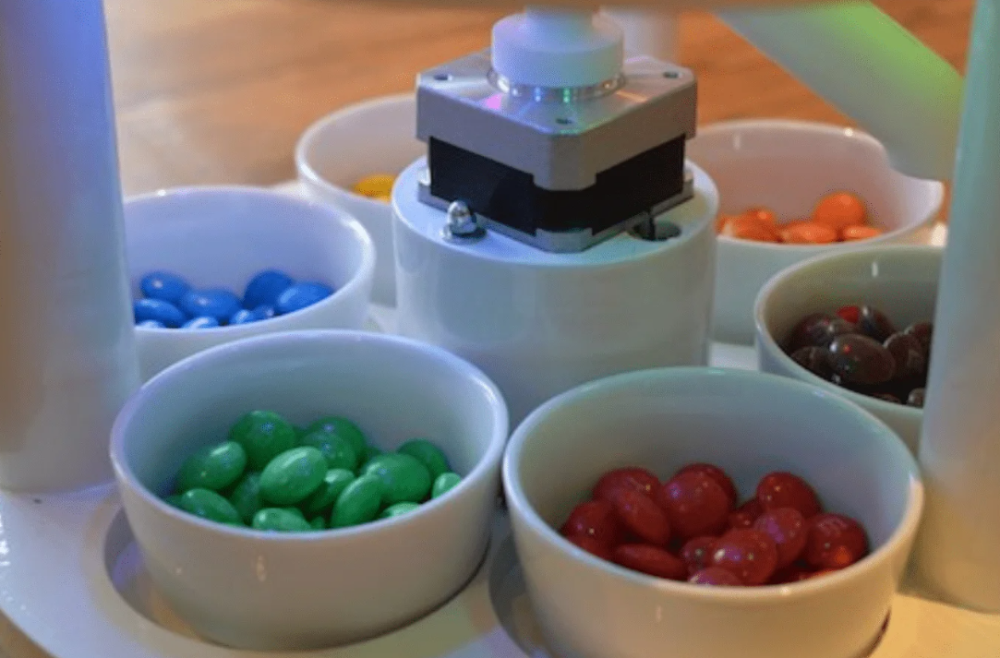
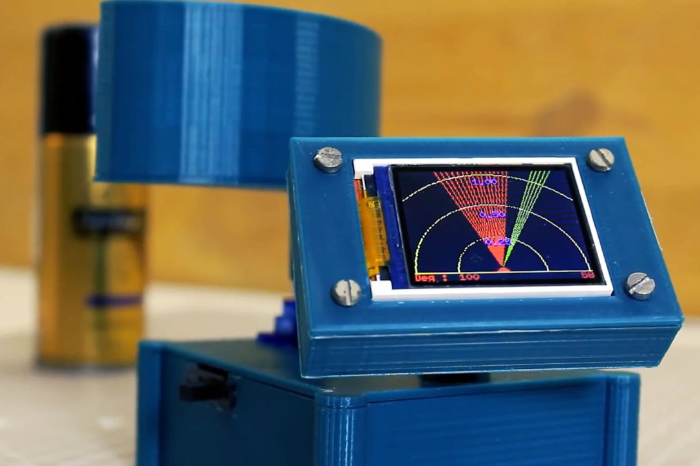

Top 5 projektów z arduino
Opisywana konstrukcja to oryginalny zegar, który do odmierzania czasu oraz wskazywania godziny wykorzystuje metalowe kulki. Odczytanie godziny polega na sprawdzeniu liczby kulek znajdujących się na jednej z trzech szyn:
- na pierwszej szynie każda kulka oznacza minutę,
- na drugiej szynie każda kulka oznacza 5 minut,
- na trzeciej szynie każda kulka oznacza godzinę

Urządzenie do ustalania położenia piłeczki wykorzystuje 4 mikrofony umieszczone na ruchomej platformie. Jedna para mikrofonów wykorzystywana jest do lokalizacji w osi X, a druga w osi Y. Uderzenie piłki w ruchomy stół ze sklejki jest bardzo głośne i wyraźne - dźwięk ten jest bez żadnego problemu rejestrowany przez mikrofony. Lokalizacja piłki jest określana na podstawie różnicy w czasie, w którym dany czujnik odnotował dźwięk uderzenia.

Odnawialne źródła energii stają się coraz bardziej naglącym tematem. Ich efektywne wykorzystanie może być podstawą działania naszej cywilizacji. W tym celu został zbudowany inteligentny, ruchomy stelaż pod ogniwo fotowoltaiczne.

Czy kusiło Was kiedyś, aby posortować kolorowe cukierki, np. M&M'sy? Zanim każdy trafiłby do przegródki część byłaby już pewnie zjedzona...
Rozwiązaniem tego nietypowego problemu jest prosty robot sortujący cukierki, którego mózgiem jest popularne Arduino!

Chcieliście poczuć się jak operator radaru, ale nie mieliście dostępu do tak drogiego sprzętu? Oto próba budowy prostej i taniej wersji radaru DIY.
Opisywany projekt to oryginalne zastosowanie dla taniego czujnika odległości, którego odczyty prezentowane są na wyświetlaczu ggraficznym
